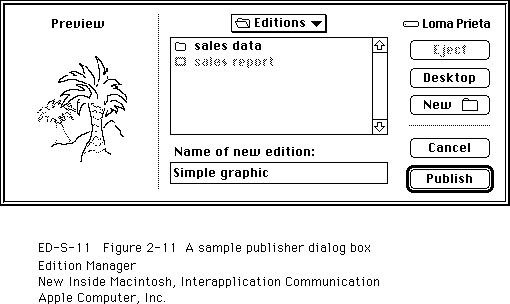

Legacy Document
Important: The information in this document is obsolete and should not be used for new development.
Important: The information in this document is obsolete and should not be used for new development.


Creating a Publisher
You need to support a Create Publisher menu command in the Edit menu. When a user selects a portion of a document and chooses Create Publisher from this menu, you should display the publisher dialog box on the user's screen. The Create Publisher menu command should remain dimmed until the user selects a portion of a document.Use the
NewPublisherDialogfunction to display the publisher dialog box on the user's screen. This function is similar to theCustomPutFileprocedure described in the chapter "Standard File Package" in Inside Macintosh: Files.
err := NewPublisherDialog(reply);The dialog box contains space for a preview (a thumbnail sketch) of the edition and a space for the user to type the name of the edition in which to write the publisher data. Figure 2-11 illustrates a sample publisher dialog box.Figure 2-11 A sample publisher dialog box

The
NewPublisherDialogfunction displays the preview (provided by your application), displays a text box with the default name of the edition (provided by your application), and handles all user input until the user clicks
Publish or Cancel.You pass a new publisher reply record as a parameter to the
NewPublisherDialogfunction.
TYPE NewPublisherReply = RECORD canceled: Boolean; {user clicked Cancel} replacing: Boolean; {user chose existing } { filename for an edition} usePart: Boolean; {always FALSE in version 7.0} preview: Handle; {handle to 'prvw', 'PICT', } { 'TEXT', or 'snd ' data} previewFormat: {type of preview} FormatType; container: EditionContainerSpec;{initially, default name } { and location of edition; } { on return, edition name & } { location chosen by the } { user to publish data to} END;You fill in theusePart,preview,previewFormat, andcontainerfields of the new publisher reply record.Always set the
usePartfield toFALSE. Thepreviewfield should contain eitherNILor the data to display in the preview. ThepreviewFormatfield should contain'PICT','TEXT','snd ', or'prvw'.Set the
containerfield to be the default name and folder for the edition. The default name should reflect the data contained in the publisher. For example, if a user publishes a bar chart of sales information entitled "sales data," then the default name for the edition could also be "sales data." Otherwise, you should use the document name followed by a hyphen (-) and a number to establish uniqueness. For example, your default name could be "January Totals - 3."If the document has not been saved, the default name should be "untitled edition <n>" where n is a number to establish uniqueness. The default folder should be the same as the edition for the last publisher created in the same document. If this is the first publisher in the document, the default folder should be the same folder that the document is in.
The
canceledfield of the new publisher reply record indicates whether the user clicked Cancel. Thereplacingfield indicates whether the user chose to replace an existing edition file. IfreplacingreturnsFALSE, call theCreateEditionContainerFilefunction to create an edition file.The
containerfield is of data typeEditionContainerSpec.
TYPE EditionContainerSpec = RECORD theFile: FSSpec; {record that identifies the } { file to contain edition data} theFileScript: ScriptCode; {script code of filename} thePart: LongInt; {which part of file, } { always kPartsNotUsed} thePartName: Str31; {not used in version 7.0} thePartScript: ScriptCode; {not used in version 7.0} END;The fieldtheFileis a file system specification record, a data structure of typeFSSpec. You identify the edition using a volume reference number, directory ID, and filename. When specifying an edition, follow the standard conventions described in Inside Macintosh: Files.After filling in the fields of the new publisher reply record, pass it as a parameter to the
NewPublisherDialogfunction, which displays the publisher dialog box.
err := NewPublisherDialog(reply);After displaying the publisher dialog box, use theCreateEditionContainerFilefunction to create the edition container, and then use theNewSectionfunction to create the section record and the alias record. See the next section, "Creating the Edition Container," and "Creating the Section Record and Alias Record" on page 2-15 for detailed information.The following code segment illustrates how your application might respond to the user choosing the Create Publisher menu item. In this case, the code sets up the preview for the edition, sets the default name for the edition container, and calls an application-defined function (
DoNewPublisher, shown in Listing 2-4 on page 2-33) to display the publisher dialog box on the user's screen. An application might call theDoNewPublisherfunction in response to the user's choosing Create Publisher from the Edit menu or in response to handling the Create Publisher event. The chapter "Responding to Apple Events" in this book gives an example of a handler for the Create Publisher event.
VAR thisDocument: MyDocumentInfoPtr; promptForDialog: Boolean; preview: Handle; previewFormat: FormatType; defaultLocation: EditionContainerSpec; myErr: OSErr; BEGIN {Get a preview to show the user. The MyGetPreviewForSelection } { function returns a handle to the preview.} preview := MyGetPreviewForSelection(thisDocument); previewFormat := 'TEXT'; defaultLocation := MyGetDefaultEditionSpec(thisDocument); promptForDialog := TRUE; myErr := DoNewPublisher(thisDocument, promptForDialog, preview, previewFormat, defaultLocation); END;Creating the Edition Container
Use theCreateEditionContainerFilefunction to create an edition container to hold the publisher data.
err := CreateEditionContainerFile(editionFile, fdCreator, editionFileNameScript);This function creates an edition container. The edition container is empty (that is, it does not contain any formats) at this time.To associate an icon with the edition container, create the appropriate entries for the icon in your application's bundle. See the chapter "Finder Interface" in Inside Macintosh: Macintosh Toolbox Essentials for additional information. Depending on the contents of the edition, the file type will be
'edtp'(for graphics),'edtt'(for text), or'edts'(for sound).After creating the edition container, use the
NewSectionfunction to create the section record and alias record for the section.Listing 2-4 illustrates how to create a publisher. The
DoNewPublisherfunction shown in the listing is a function provided by an application. Note that an application might call theDoNewPublisherfunction in response to the user's choosing the Create Publisher command or in response to the Create Publisher event. The chapter "Responding to Apple Events" in this book gives an example of a handler for the Create Publisher event.The parameters to the
DoNewPublisherfunction include a pointer to information about the document, a Boolean value that indicates if the function should display the new publisher dialog box, the preview for the edition, the preview format, and an edition container.The function displays the publisher dialog box if requested, letting the user accept or change the name of the edition and the location where the edition should reside. Use the
CreateEditionContainerFilefunction to create the edition with the given name and location. Use theNewSectionfunction to create a new section for the publisher.After the section is created, you must write out the edition data. Be sure to add the newly created section to your list of sections for this document. There are several different techniques for creating publishers and unique IDs; this listing displays one technique.
After creating the edition container and creating a new section record, the
DoNewPublisherfunction calls another application-defined routine,DoWriteEdition, to open the edition and write data to it.Listing 2-4 Creating a publisher
FUNCTION DoNewPublisher(thisDocument: MyDocumentInfoPtr; promptForDialog: Boolean; preview: Handle; previewFormat: FormatType; editionSpec: EditionContainerSpec) : OSErr; VAR getLastErr, dialogErr: OSErr; createErr, sectionErr: OSErr; resID: Integer; thisSectionH: SectionHandle; reply: NewPublisherReply; BEGIN {set up info for new publisher reply record} reply.replacing := FALSE; reply.usePart := FALSE; reply.preview := preview; reply.previewFormat := previewFormat; reply.container := editionSpec; IF promptForDialog THEN BEGIN {user interaction is allowed} {display dialog box and let user select} dialogErr := NewPublisherDialog(reply); {dispose of preview data handle} DisposeHandle(reply.preview); IF dialogErr <> noErr THEN MyErrHandler(dialogErr); IF reply.canceled THEN BEGIN {do nothing if user canceled} DoNewPublisher := userCanceledErr; EXIT(DoNewPublisher); END; END; {of promptForDialog} IF NOT reply.replacing THEN BEGIN {if user isn't replacing an existing file, create a new one} createErr := CreateEditionContainerFile(reply.container.theFile, kAppSignature, reply.container.theFileScript); IF createErr <> noErr THEN BEGIN DoNewPublisher := errAEPermissionDenied; EXIT(DoNewPublisher); END; END; {of not replacing} {Advance counter to make a new unique sectionID for this } { document. It is not required that you equate section IDs } { with resources.} thisDocument^.nextSectionID := thisDocument^.nextSectionID + 1; {create a publisher section} sectionErr := NewSection(reply.container, thisDocument^.fileSpecPtr, stPublisher, thisDocument^.nextSectionID, pumOnSave, thisSectionH); IF (sectionErr <> noErr) & (sectionErr <> multiplePublisherWrn) & (sectionErr <> notThePublisherWrn) THEN MyErrHandler(sectionErr); resID := thisDocument^.nextSectionID; {add this section/alias pair to app's internal bookkeeping} MyAddSectionAliasPair(thisDocument, thisSectionH, resID); {write out first edition} DoWriteEdition(thisSectionH); {Remember that the section and alias records need to be } { saved as resources when the user saves the document.} {set the function result appropriately} DoNewPublisher := MyGetLastError; END;Opening an Edition Container to Write Data
Several routines are required to write (publish) data from a publisher to an edition container. (For information on creating an edition container, see the previous section.) Before writing data to an edition, you must use theOpenNewEditionfunction. This function should be used only for a publisher within a document. Use this function to initiate the writing of data to an edition.
err := OpenNewEdition(publisherSectionH, fdCreator, publisherSectionDocument, refNum);A user may try to save a document containing a publisher that is unable to write its data to an edition--because another publisher (that shares the same edition) is writing, another subscriber (that shares the same edition) is reading, or a publisher located on another computer is registered to the section. In such a case, you may decide to refrain from writing to the edition so that the user does not have to wait. You should also refrain from displaying an error to the user. The contents of the publisher are saved to disk with the document. The next time that the user saves the document, you can write the publisher data to the edition. You should display an alert box to discourage users from making multiple copies of the same publisher and pasting them in the same or other documents (see "Duplicating Publishers and Subscribers" on page 2-58).If a user clicks Send Edition Now within the publisher options dialog box (to write publisher data to an edition manually), and the publisher is unable to write its data to its edition (for any of the reasons outlined above), you should display an error message.
After you are finished writing data to an edition, use the
CloseEditionfunction to close the edition.Listing 2-5 illustrates how to write data to an edition. For an existing edition container, you must open the edition, write each format using the
WriteEditionfunction, and close the edition using theCloseEditionfunction. This listing shows how to write text only. If the edition is written successfully, subscribers receive Section Read events.Listing 2-5 Writing data to an edition
PROCEDURE DoWriteEdition(thePublisher: SectionHandle); VAR eRefNum: EditionRefNum; openErr: OSErr; writeErr: OSErr; closeErr: OSErr; thisDocument: MyDocumentInfoPtr; textHandle: Handle; BEGIN {find out which document this section belongs to} thisDocument := MyFindDocument(thePublisher); {open edition for writing} openErr := OpenNewEdition(thePublisher, kAppSignature, thisDocument^.fileSpecPtr, eRefNum); IF openErr <> noErr THEN MyErrHandler(openErr);{handle error and exit} {get the text data to write} textHandle := MyGetTextInSection(thePublisher, thisDocument); {write out text data} HLock(textHandle); writeErr := WriteEdition(eRefNum, 'TEXT', textHandle^, GetHandleSize(textHandle)); HUnLock(textHandle); IF writeErr <> noErr THEN BEGIN {There were problems writing; simply close the edition. } { When successful = FALSE, the edition data <> section } { data. Note: this isn't fatal or bad; it just means } { that the data wasn't written and no Section Read events } { will be generated.} closeErr := CloseEdition(eRefNum, FALSE); END ELSE BEGIN {The write was successful; now close the edition. } { When successful = TRUE, the edition data = section data.} { This edition is now available to any subscribers. } { Section Read events will be sent to current subscribers.} closeErr := CloseEdition(eRefNum, TRUE); END; END;